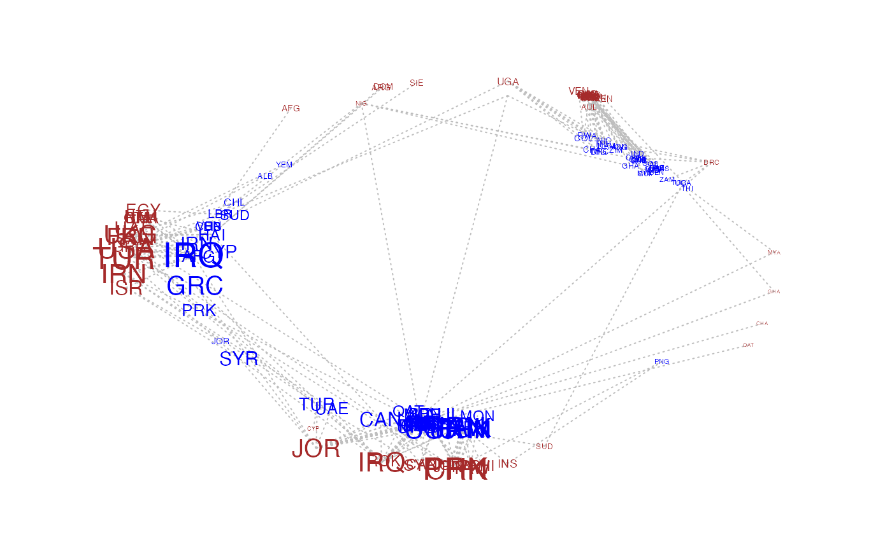

Produce a circular network plot.
circplot( Y, U = NULL, V = NULL, row.names = rownames(Y), col.names = colnames(Y), plotnames = TRUE, vscale = 0.8, pscale = 1.75, mscale = 0.3, lcol = "gray", rcol = "brown", ccol = "blue", pch = 16, lty = 3, jitter = 0.1 * (nrow(Y)/(1 + nrow(Y))), bty = "n", add = FALSE )
| Y | (matrix) m by n relational matrix. |
|---|---|
| U | (matrix) m by 2 matrix of row factors of Y. |
| V | (matrix) n by 2 matrix of column factors of Y. |
| row.names | (character vector) names of the row objects. |
| col.names | (character vector) names of the columns objects. |
| plotnames | (logical) plot row and column names. |
| vscale | (scalar) scaling factor for V coordinates. |
| pscale | (scalar) scaling factor for plotting characters. |
| mscale | (scalar) scaling factor for plotting characters. |
| lcol | (scalar or vector) line color(s) for the nonzero elements of Y. |
| rcol | (scalar or vector) node color(s) for the rows. |
| ccol | (scalar or vector) node color(s) for the columns. |
| pch | (integer) plotting character. |
| lty | (integer) line type. |
| jitter | (scalar) a number to control jittering of nodes. |
| bty | (character) bounding box type. |
| add | (logical) add to existing plot |
This function creates a circle plot of a relational matrix or social network.
If not supplied via U and V, two-dimensional row factors and
column factors are computed from the SVD of Y, scaled versions of
which are used to plot positions on the outside edge (U) and inside
edge (V) of the circle plot. The magnitudes of the plotting characters
are determined by the magnitudes of the rows of U and V.
Segments are drawn between each row object i and column object
j for which Y[i,j]!=0.
Peter Hoff
